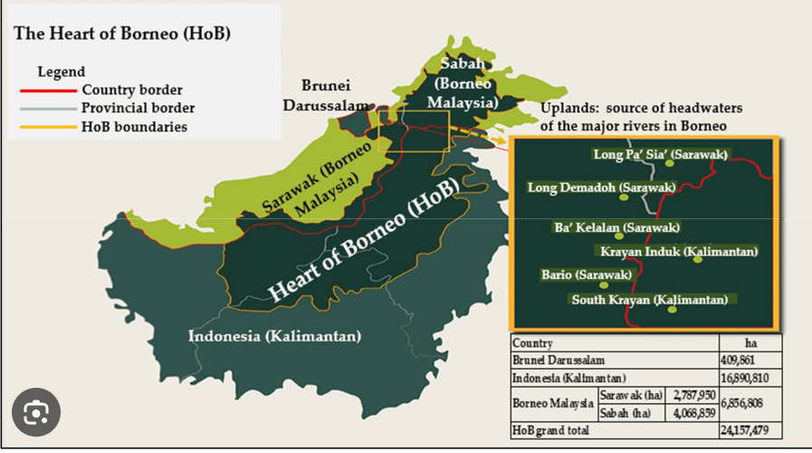

Identify
You can upload any plant photos to check their information:

- Country boarder
- Provinvial boarder
- HoB boarderies
Sample Plant Data
| Family | Dipterocarpaceae |
|---|---|
| Genus | Vatica |
| Species | Acrocarpa |
You can upload any plant photos to check their information:

| Family | Dipterocarpaceae |
|---|---|
| Genus | Vatica |
| Species | Acrocarpa |